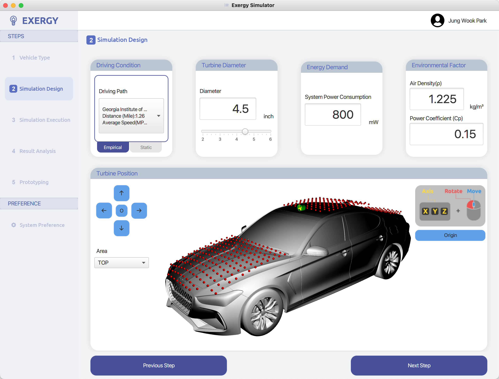

Jiawei Zhou 周嘉玮
Ph.D. Student
Human-Centered Computing
Georgia Institute of Technology
ABOUT ME
I am a third-year PhD student in Human-Centered Computing at Georgia Tech. I work in the Social Dynamics and Wellbeing (SocWeB) Lab under the advisory of Dr. Munmun De Choudhury.
My research broadly lies in Social Computing, Human-AI Interaction, and Health Informatics. I adopt a theory-guided approach using quantitative and qualitative methods to understand the role of technology in addressing or exacerbating problems in social interactions and health and well-being.
Combining theoretical power and machine learning, statistical analyses, and natural language processing methods, I aspire to respond to real-world challenges, such as misinformation and hate speech, (mis)use of generative AI, social support strategies, and health equity.
In my free time, I love to cuddle with my cat Kabi, travel, play badminton, and cook. 


NEWS
- [Jan. 2023] Our paper "Synthetic Lies: Understanding AI-Generated Misinformation and Evaluating Applicability of Algorithmic and Human Solutions" got accepted to CHI2023!
- [Apr. 2022] I passed my PhD qualifier!
- [Dec. 2021] Our paper "Veteran Critical Theory as a Lens to Understand Veterans' Needs and Support on Social Media" has been accepted to CSCW! Will present this work next year in CSCW'22.
- [Nov. 2021] Our paper "Perspectives on Integrating Trusted Other Feedback in Therapy for Veterans with PTSD" has been accepted to CHI!
- [May 2021] Starting my summer research internship at Mayo Clinic Department of AI and Informatics!
PUBLICATIONS
(CHI 23) Synthetic Lies: Understanding AI-Generated Misinformation and Evaluating Applicability of Algorithmic and Human Solutions
Jiawei Zhou, Yixuan Zhang, Qianni Luo, Andrea G Parker, Munmun De Choudhury
Accepted by CHI Conference on Human Factors in Computing Systems.

(IMWUT 23) Exergy: A Toolkit to Simplify Creative Applications of Wind Energy Harvesting.
Jung Wook Park, Sienna Xin Sun, Tingyu Cheng, Dong Whi Yoo, Jiawei Zhou, Youngwook Do, Gregory D. Abowd, Rosa I. Arriaga
Accepted by the ACM on Interactive, Mobile, Wearable and Ubiquitous Technologies (PACM IMWUT)

(CSCW 22) Veteran Critical Theory as a Lens to Understand Veterans' Needs and Support on Social Media
[ PDF]
[Link]
Jiawei Zhou, Koustuv Saha, Irene Michelle Lopez Carron, Dong Whi Yoo, Catherine R. Deeter, Munmun De Choudhury, Rosa I. Arriaga
Proceedings of the ACM on Human-Computer Interaction 6, no. CSCW1 (2022): 1-28.
(CHI 22) Perspectives on Integrating Trusted Other Feedback in Therapy for Veterans with PTSD
[ PDF]
[Link]
Hayley I. Evans, Catherine R. Deeter, Jiawei Zhou, Kimberly Do, Andrew M. Sherrill, Rosa I. Arriaga
In CHI Conference on Human Factors in Computing Systems (pp. 1-16).

(ICHI 22) A Tale of Two Perspectives: Harvesting System Views and User Views to Understand Patient Portal Engagement
[ PDF]
[Link]
Jiawei Zhou, Rosa I. Arriaga, Hongfang Liu, Ming Huang
IEEE 10th International Conference on Healthcare Informatics (ICHI), pp. 373-383. IEEE, 2022.

You can find more information in my CV.
Built with , Minimal Light theme, and flaticon icons.